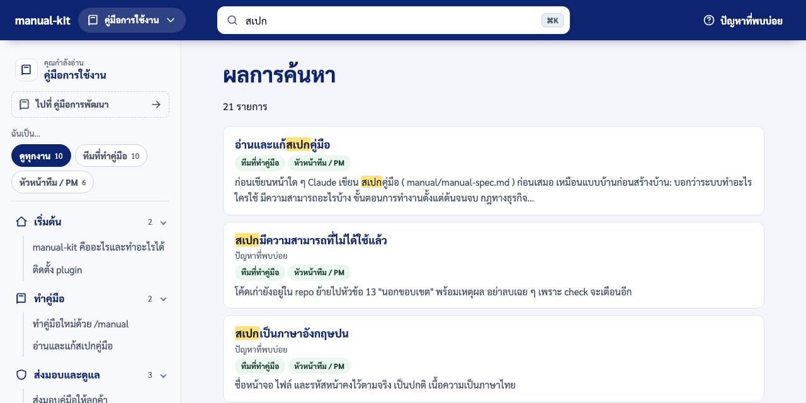

ตัวเลือกของคู่มือ
เลือกภาษา จำนวนเล่ม ระดับภาพและวิดีโอ ข้อมูลเอกสาร และผลลัพธ์ บอกในคำสั่ง /manual หรือแก้ manual.config.yaml
- สำหรับ
- ทีมที่ทำคู่มือ หัวหน้าทีม / PM
ในหน้านี้
ทุกตัวเลือกบอก Claude เป็นประโยคธรรมดาในคำสั่ง /manual ได้ Claude จะเขียนลง manual/manual.config.yaml ให้
ถ้าไม่บอก Claude ใช้ค่าเริ่มต้นในตารางด้านล่างและแจ้งในรายงานว่าเลือกอะไรไป
ค่าเริ่มต้นเมื่อไม่บอก
| เรื่อง | ค่าเริ่มต้น | เปลี่ยนอย่างไร |
|---|---|---|
| ภาษา | ไทยอย่างเดียว | "ทำทั้งไทยและอังกฤษ" ได้หน้าภาษาอังกฤษคู่ที่โครงเดียวกัน (languages: [th, en]) |
| ผลลัพธ์ | PDF ถ้าไม่ระบุ | "Word" = ไฟล์ .docx, "เว็บ" = เว็บคู่มือ (outputs: { pdf, docx, web }) |
| จำนวนเล่ม | ตามผู้อ่านในสเปก: คู่มือผู้ใช้ และคู่มือผู้ดูแลระบบเมื่อผู้ดูแลมีหน้าจอของตัวเอง | "ทำแค่คู่มือผู้ใช้" หรือ "แยกคู่มือเจ้าหน้าที่" (books) |
| ภาพและวิดีโอ | ภาพทีละขั้น + วิดีโอเมื่อรันระบบได้และมี ffmpeg, ภาพทีละขั้นถ้าไม่มี ffmpeg, ไม่มีภาพถ้ารันระบบไม่ได้ | "ภาพหน้าจออย่างเดียว" หรือ "ไม่ต้องมีวิดีโอ" (media) |
| จำนวนหน้า | ตามแผนในสเปก | ตัวเลขที่บอกเป็นเพดาน ไม่ใช่เป้า เช่น "ไม่เกิน 10 หน้า" |
ระดับภาพและวิดีโอ (media)
| ค่า | ได้อะไร | ต้องมี |
|---|---|---|
none |
ข้อความล้วน | |
screenshots |
ภาพหน้าจอพร้อมกรอบแดงชี้จุดที่ต้องกด | ระบบรันในเครื่องได้ |
steps |
ภาพหน้าจอ + ภาพทีละขั้นพร้อมเลข | ระบบรันในเครื่องได้ |
steps+video |
ทั้งหมด + วิดีโอสั้นมีคำบรรยายบนภาพและเพลงประกอบ (ไม่มีเสียงพากย์) | ระบบรันได้ และ ffmpeg |
ในเว็บ ภาพทีละขั้นกดดูทีละภาพได้ ส่วนใน PDF และ Word วิดีโอแสดงเป็นภาพปก (และ QR code เมื่อกำหนดที่อยู่ของเว็บคู่มือ) ระบบที่ไม่มีหน้าเว็บ เช่น เครื่องมือแบบบรรทัดคำสั่ง ใช้ภาพหน้าต่าง terminal จากคำสั่งจริงได้ (แบบที่เล่มนี้ใช้)
ตัวอย่างเว็บคู่มือ: ค้นหาคำภาษาไทยได้ทันทีที่พิมพ์

ข้อมูลเอกสาร (document)
ข้อมูลที่ขึ้นบนปก หน้าข้อมูลเอกสาร ประวัติการแก้ไข หน้าอนุมัติ และบทนำของทุกเล่ม:
| ช่อง | ความหมาย |
|---|---|
title, subtitle |
ชื่อคู่มือ |
client, project |
ลูกค้า ชื่อโครงการ |
docNumber, version, date |
เลขที่เอกสาร เวอร์ชัน วันที่ |
classification |
ระดับชั้นความลับ |
preparedBy, approvers |
ผู้จัดทำ ผู้อนุมัติ (ชื่อและตำแหน่ง) |
revisions |
ประวัติการแก้ไข (หรือ revisionsFromGitTags: true ใช้ git tag) |
purpose, scope, audience, glossary, contact |
วัตถุประสงค์ ขอบเขต ผู้อ่าน อภิธานศัพท์ ช่องทางติดต่อ |
สิ่งที่ไม่รู้เป็น (รอระบุ) เสมอ ไม่แต่งชื่อคน เบอร์โทร หรือเลขที่เอกสาร ส่วนหน้าข้อมูลเอกสารแต่ละส่วน
(ปก สารบัญภาพ หน้าอนุมัติ ภาคผนวก ฯลฯ) เปิดปิดได้ใน sections
หน้าตาและแม่แบบ
- เว็บคู่มือ: แถบบนสีแบรนด์ เมนูซ้าย "ในหน้านี้" ค้นหา ⌘K ตั้งชื่อ โลโก้ สีและฟอนต์ได้ที่
web.brand - แม่แบบของลูกค้า: ตอนนี้ใช้แม่แบบกลางเรียบ ๆ ทุกโครงการ ไฟล์ Word ของลูกค้า (
templates.docx) และ CSS สำหรับ PDF (templates.pdfCss) ใส่ได้แล้ว แต่แม่แบบสำเร็จรูปตามลูกค้าเป็นงานที่ตัดสินใจไว้ว่าจะทำทีหลัง - กฎคำ: คำโอ้อวดแบบจัดอันดับหรือยกตัวเองเหนือผู้อื่นถูกตรวจให้เสมอทั้งไทยและอังกฤษ คำที่โครงการไม่ใช้เพิ่มได้ใน
wording.forbiddenเช่นเล่มนี้มีกฎให้ใช้คำว่า "กด" ทั้งเล่ม เมื่อเจ้าของโครงการแก้คำเดิมซ้ำ ให้เปลี่ยนเป็นกฎแทนการจำ